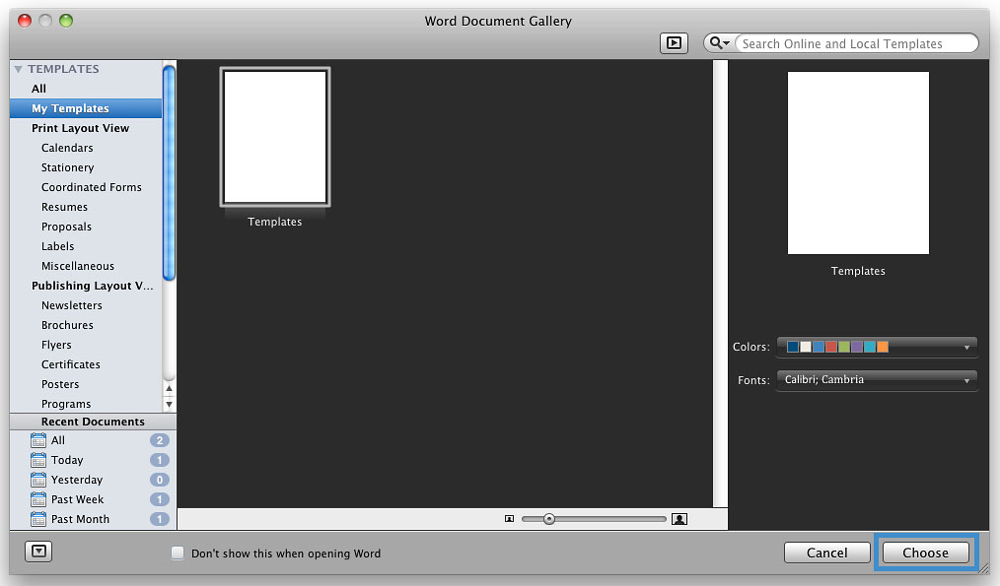
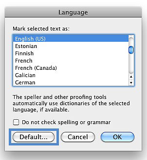

Authoring Techniques for Accessible Office Documents: Microsoft Word 2011:Mac
Quick Reference
- Usage Notes
- Technique 1. Use Accessible Templates
- Technique 2. Specify Document Language
- Technique 3. Provide Text Alternatives for Images and Graphical Objects
- Technique 4. Avoid "Floating" Elements
- Technique 5. Use Headings
- Technique 6. Use Named Styles
- Technique 7. Use Built-In Document Structuring Features
- Technique 8. Make Charts Accessible
- Technique 9. Make Content Easier to See
- Technique 10. Make Content Easier to Understand
- Technique 11. Check Accessibility
Usage Notes
At the time of testing (April 2013), Word 2011:Mac provides a set of accessibility features that is sufficient to enable the production of accessible digital office documents. However, it does not include an accessibility checking feature.
This guide is intended to be used for documents that are:
- Intended to be used by people (i.e., not computer code),
- Text-based (i.e., not simply images, although they may contain images),
- Fully printable (i.e., where dynamic features are limited to automatic page numbering, table of contents, etc. and do not include audio, video, or embedded interactivity),
- Self-contained (i.e., without hyperlinks to other documents, unlike web content), and
- Typical of office-style workflows (Reports, letters, memos, budgets, presentations, etc.).
For more information on creating forms, web pages, applications, or other dynamic and/or interactive content that are accessible, you should consult the W3C-WAI Web Content Accessibility Guidelines (WCAG 2.0) because these are specifically designed to provide guidance for highly dynamic and/or interactive content.
File Formats
The default file format for Word 2011:Mac is Office Open XML (DOCX). In addition, Word 2011:Mac offers many other word processor and web format saving options, however most of these have not been checked for accessibility.
Disclaimer and Testing Details
- The following techniques will increase the accessibility of your documents, but it does not guarantee accessibility to any specific disability groups. In cases where more certainty is required, it is recommended that you test the office documents with end users with disabilities, including screen reader users.
- The application-specific steps and screenshots in this document were created using Microsoft Word 2011:Mac while creating a DOCX document.
- This document is provided for information purposes only and is neither a recommendation nor a guarantee of results. If errors are found, please report them to: adod-comments@idrc.ocad.ca.
Technique 1. Use Accessible Templates
All office documents start with a template, which can be as simple as a blank standard-sized page or as complex as a nearly complete document with text, graphics and other content.
Word 2011:Mac’s default template for a new documents is a blank page. It is possible to create your own accessible templates from scratch in Word 2011:Mac. As well, you can edit and modify the existing prepackaged templates, ensuring accessibility as you do so and saving them as a new template.
To create an accessible template
- Create a new document (from the default blank template or from one of the prepackaged templates)
- Follow the techniques in this guide.
- Go to menu item: File > Save As
- In the Save As box, insert a name for the template.
Tip: Using a descriptive File name (e.g., "Accessible Memo Template") may increase the prominence of the accessibility status. - In the Format box, select Word Template
- Select Save

To select an accessible template
Only use the following steps if an accessible template is available (e.g. a previous templates that is already created). Otherwise, simply open a new blank document.
- Select the template icon (top left corner)
- Under Templates, select My Templates (in the word document gallery)
- Select the template from the scrolling gallery
- Select Choose

Technique 2. Specify Document Language
In order for assistive technologies (e.g., screen readers) to be able to present the document accurately, it is important to indicate the natural language of the document (e.g., English, French). If a different natural language is used for a paragraph or selected text, this also needs to be clearly indicated.
To change the default language
- Go to menu item: Tools > Language…

- In the Mark selected text as: box, select the language
- Select Default…

To apply a language directly to selected text
- Select the text
- Go to menu item: Tools > Language…
- In the Mark selected text as: box, select the language
- Select OK
Technique 3. Provide Alternatives Text for Images and Graphical Objects
Tips for writing alternative text
- Try to answer the question "what information is the image conveying?"
- If the image does not convey any useful information, leave the alternative text blank
- If the image contains meaningful text, ensure all of the text is replicated
- Alternative text should be fairly short, usually a sentence or less and rarely more than two sentences
- If more description is required (e.g., for a chart or graph), provide a short description in the alternative text (e.g., a summary of the trend) and more detail in the long description, see below
- Test by having others review the document with the images replaced by the alternative text
Tips for writing longer descriptions
- Long descriptions should be used when text alternatives (see above) are insufficient to answer the question "what information is the image conveying?"
- In some situations, the information being conveyed will be how an image looks (e.g., an artwork, architectural detail, etc.). In these cases, try to describe the image without making too many of your own assumptions.
- One approach is to imagine you are describing the image to a person over the phone
- Ensure that you still provide concise alternative text to help readers decide if they are interested in the longer description
Alternatively, you can include the same information conveyed by the image within the body of the document, providing the images as an alternate to the text. In that case, you do not have to provide alternate text within the image.
To add alternative text to images and graphical objects
- Select Image
- (*Right click or Control+click) Select Format Picture...
- In the "Format Picture" window left menu, select Alt Text
- Insert description
- Select OK
Technique 4. Avoid "Floating" Elements
When images and objects are inserted into Word 2011:Mac documents they default to being an "in line with text". In this case, you do not need to change anything.
However, if you are editing a document that includes a "floating" image or object, use the procedure below:
To prevent an image or object from "floating"
- Under Arrange (top navigation bar)
- Select Wrap text
- Select In Line with Text
Technique 5. Use Headings
Any documents that are longer than a few paragraphs require structuring to make them more straightforward for readers to understand. One of the easiest ways to do this is to use "True Headings". True headings are more than just bolded, enlarged, or centered text; they are structural elements that order and levels provide a meaningful sequence to users of assistive technologies.
To apply headings
- Select text
- In the Styles panel select the heading you wish to apply (in the Home bar)
Note: If the Styles panel is not in view, go to menu item: View > Toolbox, Styles
To modify heading styles
This refers to changing the appearance of all text marked with a certain style.
- In the Styles dialog box select the heading you want to modify
- Select the drop down menu on the side of the selected heading
- Select Modify Style…
- In the Modify Style dialog, make the appropriate changes to style characteristics
- Select OK
To create a new style
- In the Styles dialog box (View > Toolbox, Styles)
- Select New Style…
- In the Name box, enter a name for the new style
- Format the characteristics of the new style
- Select OK
Technique 6. Use Named Styles
Named styles help your readers understand why something was formatted in a given way, which is especially helpful when there are multiple reasons for the same formatting (e.g., it is common to use italics for emphasis, Latin terms and species names).
To use default named styles
Default named styles can be applied the same way as headings (see Technique 5).
Technique 7. Use Built-In Document Structuring Features
7.1 Tables
When using tables, it is important to ensure that they are clear and appropriately structured. This helps all users to better understand the information in the table and allows assistive technologies (e.g., screen readers) to provide context so that the information within the table can be conveyed in a meaningful way.
Tips for tables
- Only use tables for tabular information, not for formatting, such as to position columns.
- Use "real tables" rather than text formatted to look like tables using the TAB key or space bar. These will not be recognized by assistive technology.
- Keep tables simple by avoiding merged cells and dividing complex data sets into separate smaller tables, where possible. Whenever possible, use just one row of headings.
- If tables split across pages, set the header to show at the top of each page. Also set the table to break between rows instead of in the middle of rows.
- For more complicated tables, consider creating a text summary of the essential table contents. Any abbreviations used should be explained in the summary.
- Table captions or descriptions should answer the question "what is the table’s purpose and how is it organized?" (e.g., "A sample order form with separate columns for the item name, price and quantity").
- Table cells should be marked as table headers when they serve as labels to help interpret the other cells in the table.
- Table header cell labels should be concise and clear.
- Ensure the table is not "floating" on the page.
Adding a table
- Go to Table (top navigation bar)
- Under Table Options select New
- In the "New" drop down menu drag the columns and rows need.
Note: To style the table select the table on the page and choose the design available in the Table Styles panel
7.2. Lists
When you create lists, it is important to format them as "real lists". Otherwise, assistive technologies will interpret your list as a series of short separate paragraphs instead of a coherent list of related items.
To create an ordered or unordered list
- Select Home (top navigation bar)
- Under Paragraph select the style (e.g. bullets, number)
7.3 Columns
Use Columns feature for placing text in columns. However, because columns can be a challenge for users of some assistive technologies, you should consider whether a column layout is really necessary.
7.4 Page Breaks
Start a new page by inserting a page break instead of repeated hard returns.
7.5 Use a Table of Contents
Creating an index or table of contents to outline office document content can provide a means of navigating the meaningful sequence of content.
To insert a table of contents
- Place the cursor in your document where you want to create the table of contents
- Document Elements > Table of Contents
- In the Table of Contents select the style you want to use
Note: in order for the table of content to automatically set up the user must change all the heading to Heading 1
To update table of contents
- Select the table
- Select the drop down menu beside Table of Contents
- Select Update Table…
7.6 Use Page Numbering
Numbering the pages of your document helps those reading and editing your document effectively navigate and reference its content. For users of assistive technologies, it provides a valuable point of reference within the document.
Insert page numbers
- Go to menu item: Insert > Page Numbers…
- In the Page Numbers dialog, select the page number characteristics (Position, Alignment, Show number on first page)
- Select OK
Formating page numbers
- In the Page Numbers dialog, select Format…
- Select the format characteristics in the Page Number Format dialog
- Select OK
Note: These changes are applied to the predefined page format styles. It does not create a new page format style.
7.7 Document Title
In case the document is ever converted into HTML, it should be given a descriptive and meaningful title.
To change title
- Go to menu item: File > Properties
- In the Document Properties dialog, select Summary
- Enter the title in the Title text box
Tip: you can also fill in the subject, author and other descriptions if necessary
Technique 8. Make Charts Accessible
Charts can be used to make data more understandable for some audiences. However, it is important to ensure that your chart is as accessible as possible to all members of your audience.
- All basic accessibility considerations that are applied to the rest of your document must also be applied to your charts and the elements within your charts. For example, use shape and color, rather than color alone, to convey information.
- When creating line charts, use the formatting options to create different types of dotted lines to facilitate legibility for users who are color blind.
- When creating bar charts, it is helpful to apply textures rather than colors to differentiate the bars
- Ensure that the contents are your chart are appropriate labeled to give users reference points that will help them to correctly interpret the information.
- Use the formatting options to change predefined colors, ensuring that they align with sufficient contrast requirements (see Technique 9.2)
- Consider providing the data that you used to create the chart in tabular form (e.g. as an appendix).
Technique 9. Make Content Easier to See
Here are some other things to keep in mind:
9.1 Format of Text
When formatting text, especially when the text is likely to printed, try to:
- Use font sizes between 12 and 15 points for body text.
- Use fonts of normal weight, rather than bold or light weight fonts. If you do choose to use bold fonts for emphasis, use them sparingly.
- Use standard fonts with clear spacing and easily recognized upper and lower case characters. Sans serif fonts (e.g., Arial, Verdana) may sometimes be easier to read than serif fonts (e.g., Times New Roman, Garamond).
- Avoid large amounts of text set all in caps, italic or underlined.
- Use normal or expanded character spacing, rather than condensed spacing.
- Avoid animated or scrolling text.
9.2 Use Sufficient Contrast
The visual presentation of text and images of text should have a contrast ration of at least 4.5:1. To help you determine the contrast, here are some examples on a white background:
- Very good contrast (Foreground=black, Background=white, Ratio=21:1)
- Acceptable contrast (Foreground=#767676, Background=white, Ratio=4.54:1)
- Unacceptable contrast (Foreground=#AAAAAA, Background=white, Ratio=2.32:1)
Also, always use a single solid color for a text background rather than a pattern. In order to determine whether the colors in your document have sufficient contrast, you can consult an online contrast checker, such as:
- Juicy Studio: Luminosity Color Contrast Ratio Analyzer
- Joe Dolson Color Contrast Comparison
- TPG Cobntrast Analyser
9.3 Avoid Relying on Color or other Sensory Characteristics
Content should not rely solely on sensory characteristics such as the color or shape of content elements. Here are two examples:
- Do not track changes by simply changing the color of text you have edited and noting the color. Instead use Word 2011:Mac’s "Track Changes" feature to track changes.
- Do not distinguish between images by referring to their appearance (e.g. "the bigger one"). Instead, label each image with a figure number and use that for references.
9.4 Avoid Using Images of Text
Before you use an image to control the presentation of text (e.g., to ensure a certain font or color combination), consider whether you can achieve the same result by styling "real text". If this is not possible, as with logos containing stylized text, make sure to provide alternative text for the image following the techniques noted above.
Technique 10. Make Content Easier to Understand
10.1 Write Clearly
By taking the time to design your content in a consistent way, it will be easier to access, navigate and interpret for all users:
- Whenever possible, write clearly with short sentences.
- Introduce acronyms and spell out abbreviations.
- Avoid making the document too "busy" by using lots of whitespace and by avoiding too many different colors, fonts and images.
- If content is repeated on multiple pages within a document or within a set of documents (e.g., headings), it should occur consistently each time it is repeated.
10.2 Provide Context for Hyperlinks
Hyperlinks are more effective navigation aids when the user understands the likely result of following the link. Otherwise, users may have to use trial-and-error to find what they need. To help the user understand the result of selecting a hyperlink, ensure that the link makes sense when read in the context of the text around it. For example, while it would be confusing to use "more information" as a link by itself on a page, it would be fine to use "more information" as a link in the following sentence: "The airport can be reached by taxi or bus (more information)."
Technique 11. Check Accessibility
At this time, Word 2011:Mac does not offer a mechanism to check for potential accessibility errors in your document prior to publishing.
Acknowledgments
Authors: Vellicia Christanto, Jan Richards
This document was produced as part of the Accessible Digital Office Document (ADOD) Project.This project has been developed by the Inclusive Design Research Centre, OCAD University as part of an EnAbling Change Partnership project with the Government of Ontario and UNESCO (United Nations Educational, Scientific and Cultural Organization).


Accessible Digital Office Documents (ADOD) Project by Inclusive Design Research Centre (IDRC) is licensed under a Creative Commons Attribution-ShareAlike 3.0 Unported License.
Updated: 9 Apr 2013